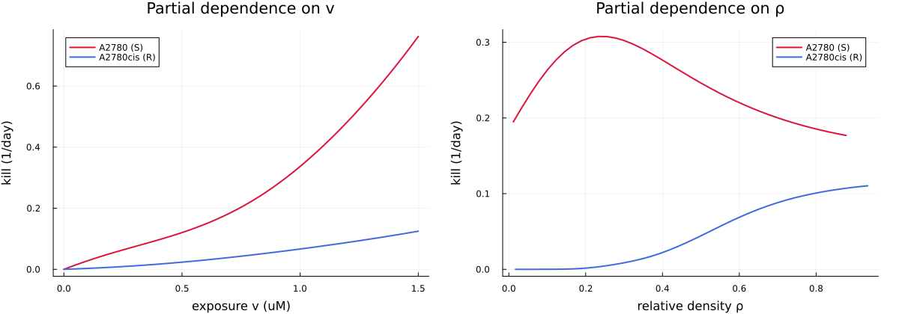

Permutation importance is the rise in one-step RMSE (log scale) when a feature is shuffled: on training rows (in-sample) and on the held-out validation rows. TreeSHAP is exact for the boosted trees. No clock-time features are used (see Stage 1). Runtime of this stage: 111.3 min.
| feature | trees_train | trees_validation | mlp_train | mlp_validation | trees_mean_abs_shap |
|---|---|---|---|---|---|
| dprev | 0.1516 | 0.07611 | 0.111 | 0.05599 | 0.1214 |
| log_well | 0.1532 | 0.1638 | 0.2181 | 0.1555 | 0.1136 |
| logN | 0.05621 | 0.01551 | 0.01519 | -0.001401 | 0.05468 |
| low_resource | 0.01575 | 0 | 0.1399 | 0 | 0.02357 |
| exposure | 0.01426 | 0.002943 | 0.02455 | 0.001262 | 0.02146 |
| line_R | 0.005233 | 0.001447 | 0.1183 | -0.03592 | 0.01095 |
| s_frac | 0.002563 | 0.0005169 | 0.06627 | -0.0004115 | 0.005306 |
| dose | 0.001213 | 0 | 0.01171 | 0 | 0.003908 |
| coculture | 9.581e-05 | 0 | 0.01203 | 0 | 0.0002595 |
| seeding | 0 | 0 | 0.001936 | -0.0003992 | 0 |
Mean |∂kill/∂input| × sd(input) over the states the fitted model visits; for line, the mean |killR − killS| at the same state. Mean and sd over the 5 seeds.
| input | mean | sd |
|---|---|---|
| exposure v | 0.1175 | 0.00889 |
| density ρ | 0.06509 | 0.003893 |
| line (S vs R) | 0.2169 | 0.004631 |

Each variant removes one NN input and is retrained from 3 seeds. Δ weighted SSE (best seed) on training (a χ², so ~2 per unit of log-likelihood) is the in-sample cost; validation RMSE (mean ± SD over seeds, from the nominal seeding) is the out-of-sample cost.
| variant | weighted_sse | weighted_sse_sd | weighted_sse_best_seed | val_treated_co_rmse | val_treated_co_rmse_sd | seeds | delta_sse_best_seed |
|---|---|---|---|---|---|---|---|
| full | 745.8 | 2.793 | 742.6 | 0.3889 | 0.003363 | 3 | 0 |
| without density ρ | 789.4 | 1.24 | 788 | 0.522 | 0.003594 | 3 | 45.31 |
| without line | 1671 | 220.2 | 1539 | 0.7056 | 0.1995 | 3 | 796.1 |